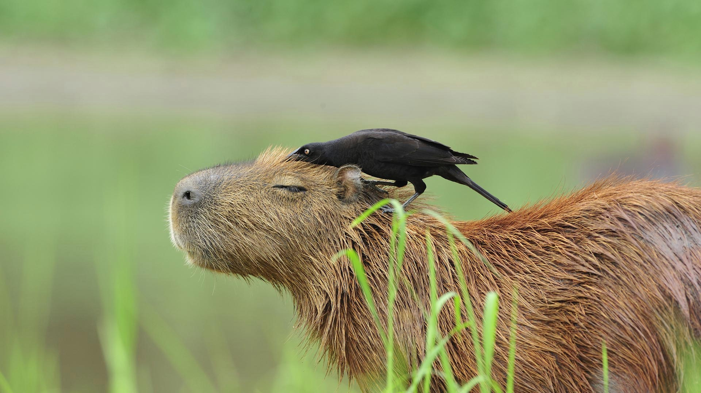

Капибарчики
Этому зверьку посвящают песни, его фотографии набирают десятки тысяч лайков в социальных сетях, с ним хотят дружить остальные животные (и люди тоже), а сам он, кажется, познал дзен. Знакомьтесь – капибара.

Кто первый?
Одним из первых фанатов капибар в интернете стал японский фотограф Кацухито Ватанабэ. Он запустил блог и
канал на «Ютубе»
, где делился контентом исключительно с этими грызунами.
У капибар есть свой гимн
В 2023 году популярность к капибарам вернулась благодаря песне c текстом «Ка-пи-ба-ра, капибара, капибара, капибара, капибара». Трек написал москвич Алексей Плужников, который
публикует музыку под псевдонимом Сто-Личный Она-Нас.
Бонус: Топ-5 капибар